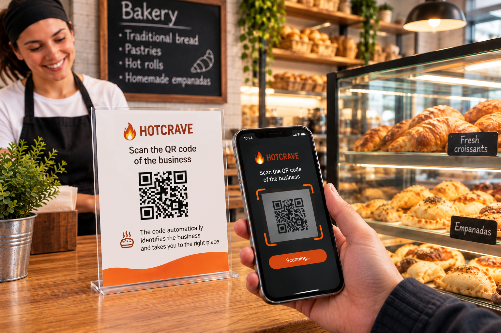

HotCrave – Get notified when freshly made food is ready near you
Seen a HotCrave QR code at a local business? Scan it using your phone's camera.

Scan the business QR code
The code automatically identifies the business, and HotCrave takes you straight to its page.
Get started with HotCrave
Using Android?
Discover freshly made food, follow your favorite local businesses, and get notified when something fresh is available nearby.
Using iPhone?
Add the HotCrave web app to your Home Screen and receive notifications when your favorite businesses post updates.
Prefer using the web?
Enable browser notifications to get updates when your favorite businesses post.
What is HotCrave?
HotCrave connects local businesses with people who want to know when fresh food is ready to enjoy.
Some foods have a special moment: when they come out of the oven, the kitchen, the fryer, or the grill. HotCrave helps you know when that moment arrives.
Have you ever arrived too early?
Maybe you stopped by the bakery and the fresh bread wasn't ready yet. Or you got to your favorite pizza place before the next batch was out of the oven. Or you simply had no idea when the next batch of your favorite food would be ready.
Sometimes it's not that you don't want freshly made food: you simply don't know when it's going to be ready.
That's exactly what HotCrave is designed to solve.
🔥 Follow every batch in real time
Businesses can update the status of their food so you can see approximately when it will be ready.
- Preparing: approximately 30 minutes remaining.
- Almost ready: approximately 15 minutes remaining.
- Ready: available now.
Because knowing that your favorite bakery makes fresh donuts every morning is not the same as knowing that the next batch is coming out right now.
How does it work?
📍 1. Find local businesses
Discover participating businesses near you, or scan a business QR code to go directly to its profile.
❤️ 2. Follow your favorites
Follow the bakeries, cafés, restaurants, pizzerias, BBQ spots, and other local businesses you want to keep up with.
🔔 3. Get notified
When a business you follow publishes a new batch, HotCrave can notify you directly on your phone.
🍕 From fresh donuts to food straight off the grill
Every business decides what to publish. You might find anything from freshly baked goods to hot meals prepared right when you are ready to enjoy them.
- Bakeries: fresh bread, donuts, muffins, cookies, croissants, pastries and other baked goods straight from the oven.
- Cafés and breakfast spots: fresh pastries, bagels, breakfast sandwiches, muffins and other freshly prepared favorites.
- Pizza and casual food: fresh pizza, wings, fries, sandwiches and other food prepared throughout the day.
- Restaurants and takeout: burgers, fried chicken, tacos, sandwiches, pasta, daily specials and other freshly prepared meals.
- BBQ and grills: ribs, pulled pork, brisket, grilled chicken and other foods coming fresh off the grill or smoker.
Can't find your favorite place?
Tell your favorite bakery, café, restaurant, pizzeria, BBQ spot, or local food business about HotCrave and ask them to join.
Once they're on HotCrave, you can follow their business and get notified whenever they publish a new batch.
🏪 Do you own a business?
Let your customers know when the fresh food is ready.
Your customers shouldn't have to guess when the next batch will be available. When something comes out of the oven, kitchen, fryer, grill, or smoker, publish it on HotCrave and let the people who follow your business know.
Publishing a new batch takes just a few seconds and can be done from a phone, tablet, or web browser.
- One tap: publish a new batch quickly.
- One notification: let your followers know when it's coming.
- Right on time: customers can find out when your food is freshly made and ready.
- Your own business profile: share your business using its unique QR code.
Contact us to learn how to start publishing your products and letting your customers know when they're freshly made.
🔥 A simple idea
If there are fresh donuts, warm bread, a new pizza coming out of the oven, or hot food being prepared near you, you should be the first to know.
That's HotCrave.
Get HotCrave on Google Play